-
Lírio de Vidro
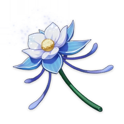Região: Liyue
Uma flor extremamente antiga. Ela cobria toda a terra de Liyue e transformava as lembranças da terra em fragrâncias quando desabrochava. Dizem que costumava desabrochar com o som de uma bela canção, e que era a flor favorita de uma certa pessoa. Mas agora é difícil encontrar o Lírio de Vidro desabrochando na natureza.
-
Dendróbio
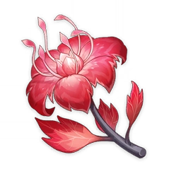Região: Inazuma
Uma planta vibrante que também foi nomeada "lycoris" pelos poetas. Pensava-se que estava extinta no arquipélago de Inazuma, mas reapareceu agora em seus campos de batalha. Dizem que seu florescimento mais encantador ocorre onde muito sangue foi derramado.
-
Flor Doce
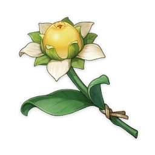Região: Quase todo o mundo de Teyvat
Flores particularmente perfumadas. Elas podem ser facilmente localizadas, mesmo no escuro, graças ao seu cheiro doce. Comumente usadas em Teyvat para fazer açúcar.
-
Flor de Seda
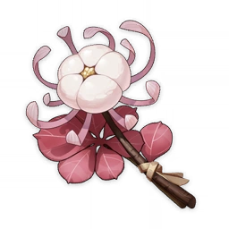Região: Liyue
Uma flor carmesim que floresce como as nuvens do arco-íris em Liyue. Ela pode ser transformada em um tecido sedoso e suave. Diz a lenda que a Guilda de Comerciantes de Feiyun tem um berçário secreto de flores de seda em algum lugar do continente. Ninguém no setor pode rivalizar com seu rendimento e textura.
-
Flor da Neblina
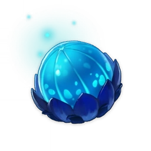Região: Mondstadt
Um broto de uma flor envolto em gelo sólido. Mesmo após ser colhida, a flor continua emitindo frio. Uma obra popular de ficção conta que uma raposa ficou presa no gelo de uma Flor da Neblina e não conseguiu se livrar dela. Para criaturas pequenas com força limitada, ela é de fato uma planta muito perigosa.
-
Lótus Nilotpala
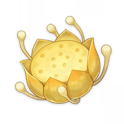Região: Sumeru
Crescendo nos pântanos da floresta e de florescimento noturno, com flores que emitem um brilho tão forte quanto a da lua.
-
Violeta
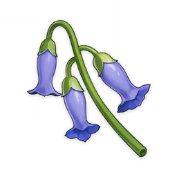Região: Liyue
Uma flor pequena com forte vitalidade. Dizia-se que sua flor que desce para baixo evita que sua fragrância se dissipe. Geralmente pode ser encontrada nas encostas das montanhas.
-
Flor do Luto
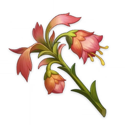Região: Sumeru
Flores carmesim capazes de florescer até mesmo nos antigos campos de batalha e nas profundezas do deserto. Suas pétalas, aparentemente murchas, parecem estar de luto pelos heróis do passado distante.
-
Rosa de Sumeru
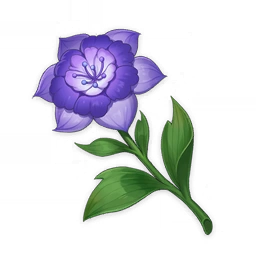Região: Sumeru
Flor roxa escura e exuberante, exala uma fragrância agradável que faz qualquer pessoa querer parar para sentir o seu aroma. Embora alguns gostem de chamá-la de um tipo de "rosa-dos-campos", a sua relativa ausência de flores múltiplas demonstra que se enquadra numa classificação floral diferente.
-
Lótus de Leite
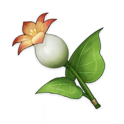Região: Mondstadt
Uma flor que cresce perto de fontes de água. Suas pétalas, quando cozidas, possuem textura crocante, com um pouco do doce e do azedo.
-
Flor Rociomarinha
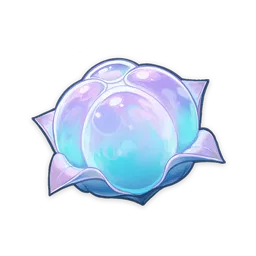Região: Fontaine
Uma flor azul elegante e etérea. Suas pétalas macias são elásticas e absorvem água, tornando-a o material ideal para vários usos diários. Dizem que a Flor Rociomarinha representa a lealdade e os juramentos inabaláveis.
-
Qingxin

Região: Liyue
Uma flor branca translúcida que cresce apenas em picos de pedra mais altos. Recusa a oferta do calor e da umidade das planícies para contemplar ao longe, dos picos das montanhas solitárias.
-
Lótus Kalpalata
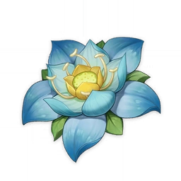Região: Sumeru
Flor de videiras que crescem no topo das falésias das montanhas. É chamada de lótus apenas por causa de sua aparência, mas o fato é que as duas não têm relação entre si.
-
Crânio de Dragão
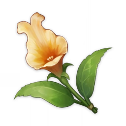Região: Mondstadt e Liyue
Pode ser consumido após cozinhar. Como um condimento, pode trazer grande destaque de sabores aos pratos.
-
Lâmpada de Grama
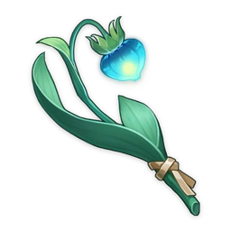Região: Mondstadt
Uma flor selvagem que emite luz durante a noite. Usada na culinária para realçar outros sabores. Assim como a fragrância sutil das flores silvestres não distrairá uma pessoa concentrada, o delicado brilho da Lâmpada de Grama também não irá atrair sua atenção, mesmo durante à noite.
-
Rosa Arco-Íris
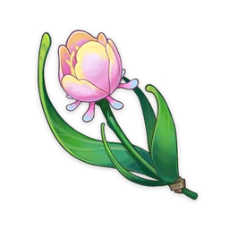Região: Fontaine
Uma flor cor de rosa suave e delicada. Apesar do nome, Rosas Arco-Íris são mais próximas a Lírios. Essa flor foi extinta e quando a era chegou a um fim caótico, uma planta que costumava crescer simbioticamente com ela roubou o nome de "Rosa Arco-Íris".
-
Cecília
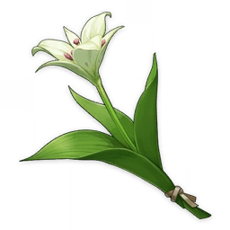Região: Mondstadt
Uma flor bonita com nome adequeado a sua aparência. Cresce apenas em locais com ventos fortes. Muito difícil de ser encontrada.
-
Flor da Luz do Lago
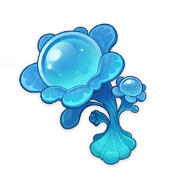Região: Fontaine
Uma flor clara verde, ela nasce onde veios d'água se juntam. Tem uma fragrância simples, refrescante e elegante, mas também gentil. Na língua das flores, significa "esperar" e "promessa eterna".
-
Margaridas Voadoras
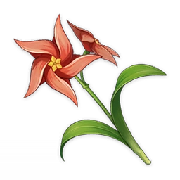Região: Mondstadt
Uma planta que adora o vento. Para os filhos orgulhosos do vento, ou os habitantes de Mondstadt, as Margaridas Voadoras são os "ventos visíveis".
-
Padisarah
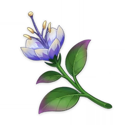Região: Sumeru
Uma flor nobre, é muito exigente em relação ao ambiente de crescimento. Os estames podem ser usados para fazer especiarias preciosas.